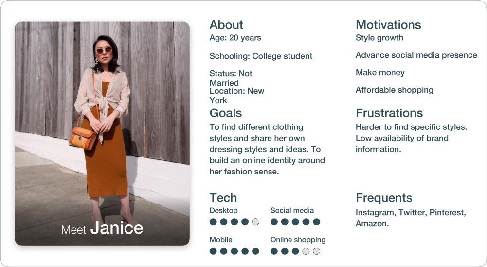
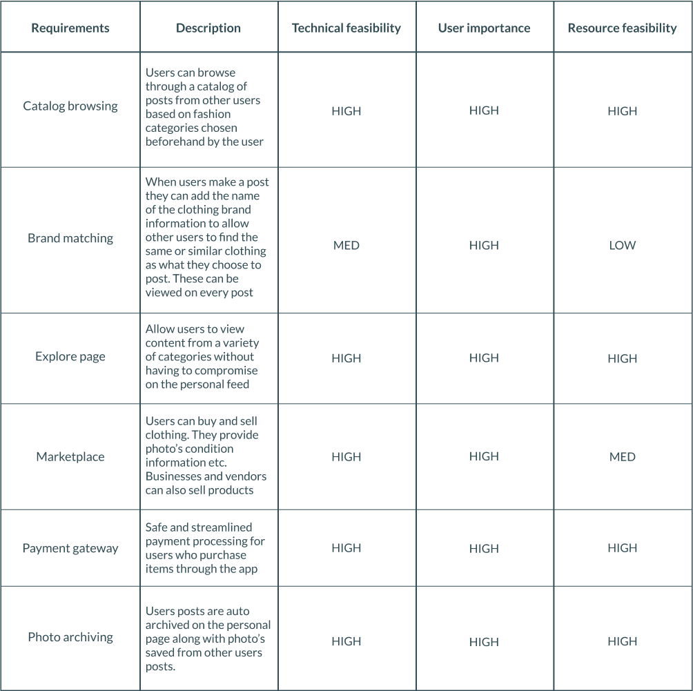
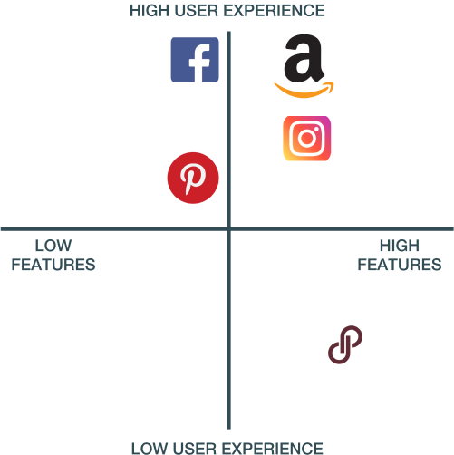
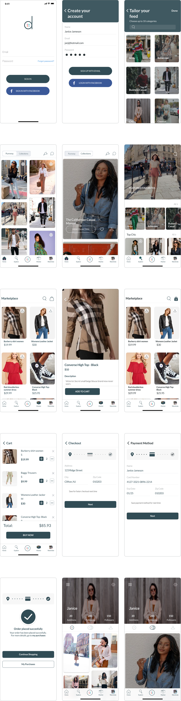

CHALLENGES
— Make the sharing and consumption of content safe for all users, especially younger users
— Reducing the input load on adding posts
— Make the sharing and consumption of content safe for all users
GOALS
— Creating a personalized icon set
— Making it a tool for people's regular usage in everyday fashion and shopping
— Create a seamless ui flow that feels natural for users to navigate through
PRODUCT DEFINITION
In order to get a good overview of the problems I interviewed a diverse group of people.
I asked them questions to gauge their overall interest in the product, their opinion on similar existing products and pain points they go through using them.
What is your first impression with the product idea?
How often do you shop for clothing?
Do you shop online frequently?
How often do you use social media?
What do you look for while scrolling through say; instagram or pinterest?
e.t.c
Many of the users reported a mostly positive interest in the product. A great deal of their concerns centered around online purchasing. Needing more options and choices beyond name brand vendors, making it easier to find things of different styles and having more information on clothing products when buying.
I used the information from the research to form a persona to get a better idea of user needs.
IDEATION
I used the HMW method to analyze the challenges present in the existing design and in the users needs.
How might we make users more aware of this product?
Running a social media ad campaign or google ads. It can be relatively inexpensive and
much
easier.
How might we attract more users?
— Add a feature that allows users to enter their clothing brand name when they make a
post
in order to help other users find the same or similar fits. And vice versa.
— Tailor their feeds according to pre-chosen fashion styles.
— Introduce collections so users can post multiple pictures under one album head.
— Allow users to sell clothing and buy from other users.
How might we create trust for online payment?
— Add a badge to denote sellers that have been verified.
— We can use a trusted 3rd party payment gateway.
How might we provide product information to buyers?
— Add location and area of the buyer or product.
— Description, brand name, size, material, photo and condition should be required to
sell a
product.
— Style of the product can also be added to make searching easier for users looking for
specific types of clothing.
How might we make the experience feel more expansive?
Add an explore page so users can view all different types of content across all fashion
categories without having to change their feed.
How might we reduce the complexities of the app?
Make the design as reductive as possible.
With this I formed a prioritization worksheet and product analysis chart.
 USER FLOW
I drew out a flow chart to map out the path users will follow.

DESIGN
I sketched out low-fi wireframes based on the specifications and iterating across different visual avenues. After I settled on a finalized design idea I began creating high-fi wireframes.
TYPOGRAPHY
Aa
Lato
The quick brown fox jumped over the lazy dog.
The quick brown fox jumped over the lazy dog.
The quick brown fox jumped over the lazy dog.
The quick brown fox jumped over the lazy dog.
The quick brown fox jumped over the lazy dog.
COLOURS
Background
#FFFFFF
Text
#314C55
Dark mode
#293235
High-Fidelity Wireframes
User reviews
Task given: Browse through the app. Starting from the account creation to the personal profile page as though you had just downloaded the app.
Feedback received as follows:
- Very easy to use. I love the design
- I could definitely use something like this if it was out now
- There should be better images for the fashion categories and more options too
- I love the UI, but I would like the sign in button to be more visible
- It looks very clean, i like it a lot